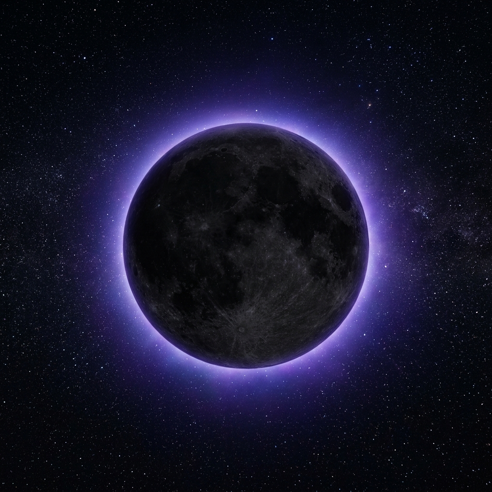
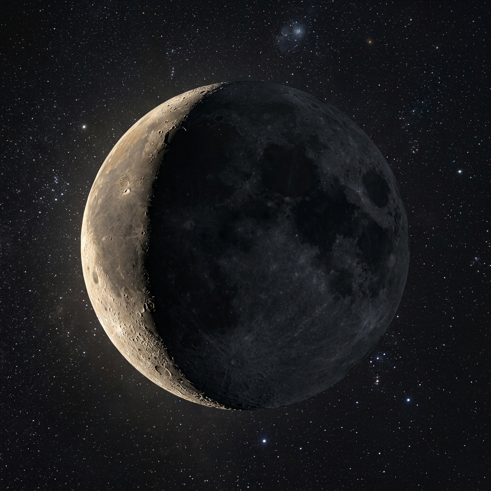

Calculando la influencia lunar para el día de hoy...
Prepara tu Consulta
Permitir cartas invertidas
✨ Sugerencias de preguntas:
Prepara tu mente y formula tu pregunta...
Selecciona tus opciones en el panel lateral y pulsa el botón dorado.
Amor
El veredicto del Oráculo
¿Pregunta?
Respuesta del Tarot:
SÍ
Explicación del sí o no...
🌕
Sinergia Lunar de la Lectura
Cargando influencia lunar...
🔮
El oráculo está hablando...
Síntesis Narrativa del Destino
La narrativa que conecta pasado, presente y futuro aparecerá aquí...
Detalle de las Cartas Reveladas
Tu Diario del Destino
Aún no has registrado lecturas en tu diario de destino. Las consultas que realices aparecerán aquí.
Vibración Diaria y Astral
Descubre los mensajes que el cosmos tiene preparados para ti hoy a través del Tarot, la numerología y los tránsitos anuales.
Haz clic en la carta para revelarla
El Sol
🗓️
RITUAL DEL DÍA
Tu Carta Natal Personal 🌟
Descubre el Arcano del Tarot que rige tu camino de vida según tu fecha de nacimiento.
7
El Carro
Tu Tirada del Año 2026 🌌
El oráculo proyecta la energía de un Arcano para cada mes del año. Haz clic en el mes para leer la interpretación.
Predicción Astrológica
Alinea tu energía con el Zodíaco...
Elige tu signo y realiza la tirada para consultar el clima astral.
Predicción Astrológica
Tu Horóscopo del Destino
Signo: Libra
♈
Tu Signo
Aries
Cargando tu correspondencia física...
☀️
Tránsito Solar
Temporada de...
Cargando influjo solar y chakra...
Tránsito Lunar
Luna en...
Cargando fase y ángel regente...
Tu Clave del Día
Síntesis y Predicción Astrológica
El horóscopo que unifica tránsitos, signos y cartas aparecerá aquí...
Alineaciones de Destino Detectadas
Detalle de las Cartas de Tránsito
Rueda de Aspectos Celestes
Alineaciones geométricas calculadas entre los planetas y tu signo solar.
Conjunción (0° - Fusión)
Sextil (60° - Armonía)
Cuadratura (90° - Tensión)
Trígono (120° - Fluidez)
Oposición (180° - Reto)
Posiciones Celestes en Tiempo Real
Coordenadas exactas en la eclíptica para el momento de consulta.
Lectura Detallada del Clima Astral
🌌
Influencia y Clima General
💖
Amor y Relaciones
💼
Trabajo, Finanzas y Éxito
🧘
Mente, Salud y Espiritualidad
Estado de la Luna
Luna Nueva
Iluminación: 0%
Edad lunar: 0.0 días
🌌
Tránsito ZodíacoLuna en -
🛡️
Ángel RegenteGabriel
Galería de Fases
Haz clic en una fase para explorar su grimorio detallado.
🌕 Luna Llena
Fase de plenitud espiritual, rituales de carga y máxima intuición.
🌒 Creciente
Siembra de intenciones, visualización de metas y acción inicial.

🌑 Luna Nueva
Ciclo de introspección, vacío y nuevos comienzos místicos.
🌓 Cuarto Crec.
Toma de decisiones, superación de obstáculos y fuerza.

🌘 Menguante
Cierre de ciclos, liberación de ataduras y purificación.
La Influencia Lumínica de Hoy
Calculando la influencia de la fase lunar actual...
Consejos y Rituales del Grimorio
🔮
Ritual Recomendado
Cargando ritual de fase...
🃏
Cuidado del Mazo
Cargando cuidado del mazo...
Tránsito Lunar Personal
Introduce tu signo zodiacal para ver la sintonía con la posición lunar de hoy.
Calendario Lunar 📅
El Libro de los Arcanos
Explora la sabiduría ancestral de los 22 Arcanos Mayores. Selecciona cualquier carta para abrir el grimorio y estudiar sus correspondencias astrológicas, significados en el amor, trabajo, salud y su vibración espiritual.
Estudio Numerológico
Persona 1
Persona 2
Descubre las vibraciones de tu destino...
Introduce tu nombre y fecha en el panel lateral para iniciar el cálculo.
🤍
Número del Alma
-
Tu yo interno y deseos del corazón.
👤
Personalidad
-
Tu yo externo y máscara social.
🛤️
Sendero de Vida
-
Tu sendero natal y misión de vida.
🌟
Número Potencial
-
Tus dones en la madurez.
📅
Día de Nacimiento
-
Tus virtudes del día natal.
Análisis de Personalidad y Misión
Estudio Kármico del Nombre
0%
Afinidad Cósmica
Introduce los nombres y fechas en el panel lateral para calcular la compatibilidad.
🤍
Afinidad del Alma
-
Compatibilidad de deseos y conexión interna.
👤
Afinidad Exterior
-
Compatibilidad de trato diario y social.
🛤️
Misión de Pareja
-
El aprendizaje o propósito evolutivo de la unión.
🧪
Alquimia Elemental
-
Afinidad de vuestros elementos de nacimiento.
Análisis de la Sinastría
El Consejo Evolutivo del Vínculo
Tu Ciclo de Vida: El Sendero de 9 Años
🔢
Año Personal -
-
Introduce tus datos para calcular las vibraciones del año en curso.
Bienvenido a El Eco de las Estrellas. En esta pestaña, puedes formular tus dudas al cosmos. Elige tu tirada (desde un Sí/No rápido hasta la profunda Cruz Celta), escribe tu pregunta con el corazón abierto y revela las cartas en el tapete místico.
🌟
Carta del Día e Identidad Astral
En la sección Carta del Día encontrarás tu Arcano protector de hoy con su afirmación y ritual. También podrás calcular tu Carta Natal de Tarot vitalicia y tu Tirada del Año completa mes a mes.
✨
Tu Horóscopo y Tránsitos
Descubre el mensaje de las cartas para tu signo en el Horóscopo diario, o bien cambia al modo de Tránsitos Celestes para contemplar las influencias astronómicas reales del cielo sobre tu signo.
🌙
Ciclo Lunar y Rituales
La Luna guía nuestras mareas internas. Sigue la Fase Lunar actual, consulta sus rituales sugeridos y siembra tus anhelos en la Siembra de Intenciones interactiva para cargarlos con la energía de la lunación.
🔢
Numerología y Destino
Los números guardan vibraciones secretas. Calcula tu Sendero de Vida, tu Año Personal actual, y explora tu Vínculo y Compatibilidad amorosa o laboral con las vibraciones de otra alma.
📖
El Libro del Tarot
Un grimorio completo a tu disposición. Explora los 22 Arcanos Mayores, sus planetas, elementos y significados al derecho e invertidos. Usa los filtros rápidos y alterna entre vista de cuadrícula o lista.
Términos Legales
Galletas del Destino (Cookies)
Utilizamos cookies técnicas locales para guardar tus preferencias astrales y mejorar la experiencia. También podríamos incluir cookies de terceros en el futuro para mostrar contenido o anuncios relevantes.
Saber más.
📋 ¡Lectura copiada al portapapeles! Compártela donde quieras ✨